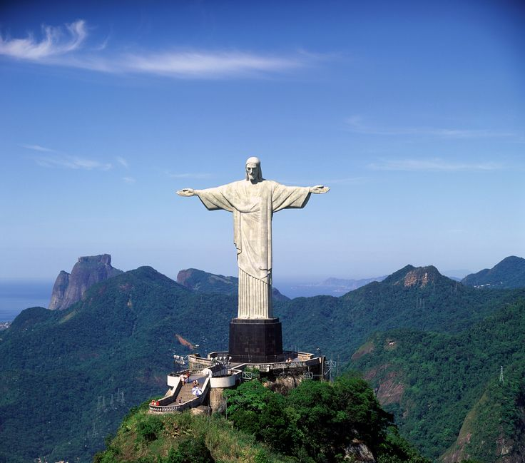
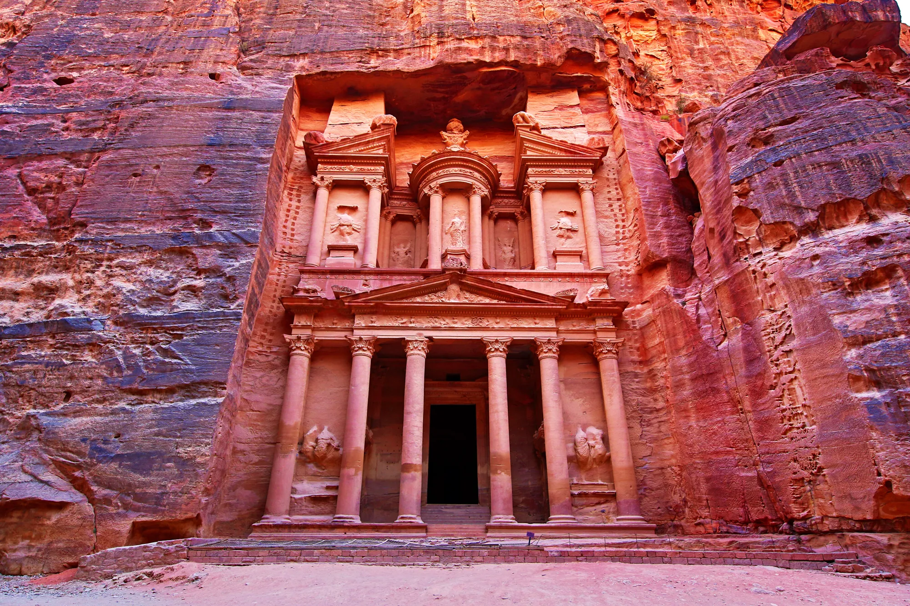
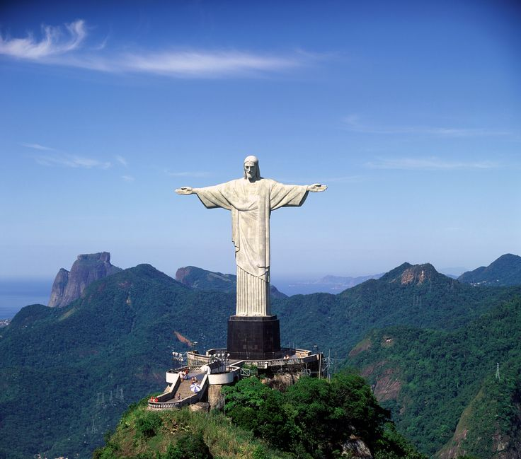
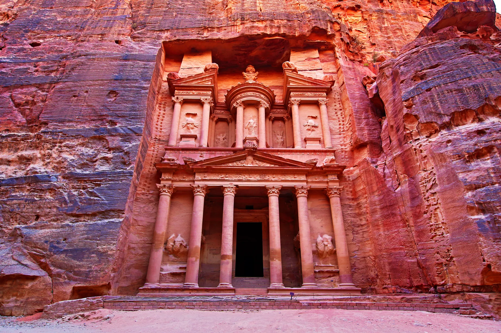

In the vast tapestry of human history, there exist exceptional creations that transcend time and space,
capturing the imagination of generations with their awe-inspiring beauty and unparalleled ingenuity. These
are the Seven Wonders, iconic marvels that stand as testaments to the limitless potential of human
creativity and craftsmanship.
From the enigmatic pyramids of ancient Egypt to the majestic colossi of classical
Greece,
each wonder represents a triumph of engineering, architecture, and artistic vision,
weaving together
the threads of culture and civilization into an enduring legacy that continues to inspire
wonder and admiration to this day.